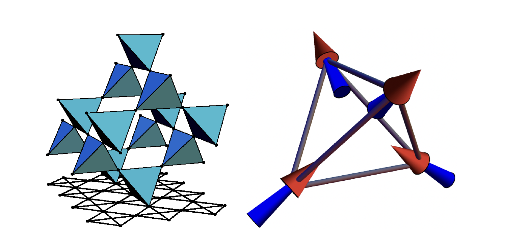
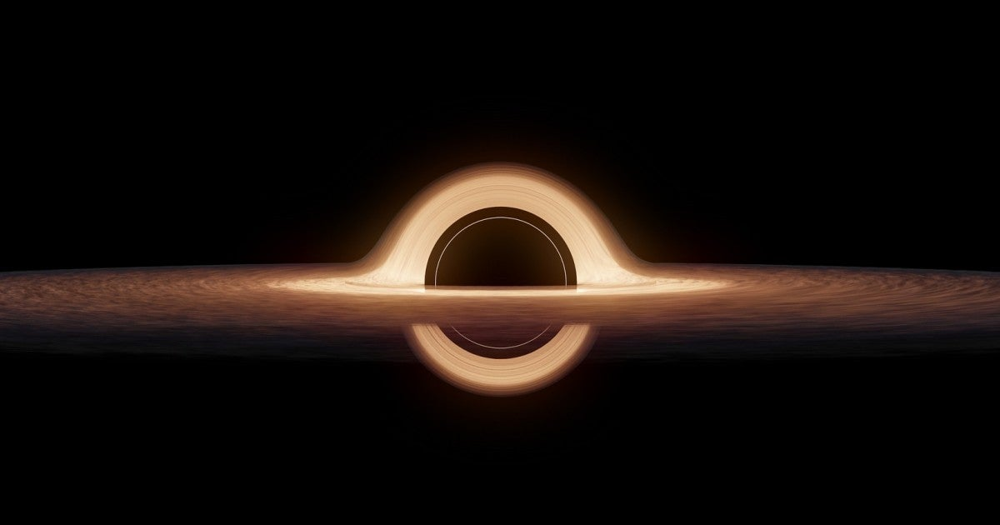
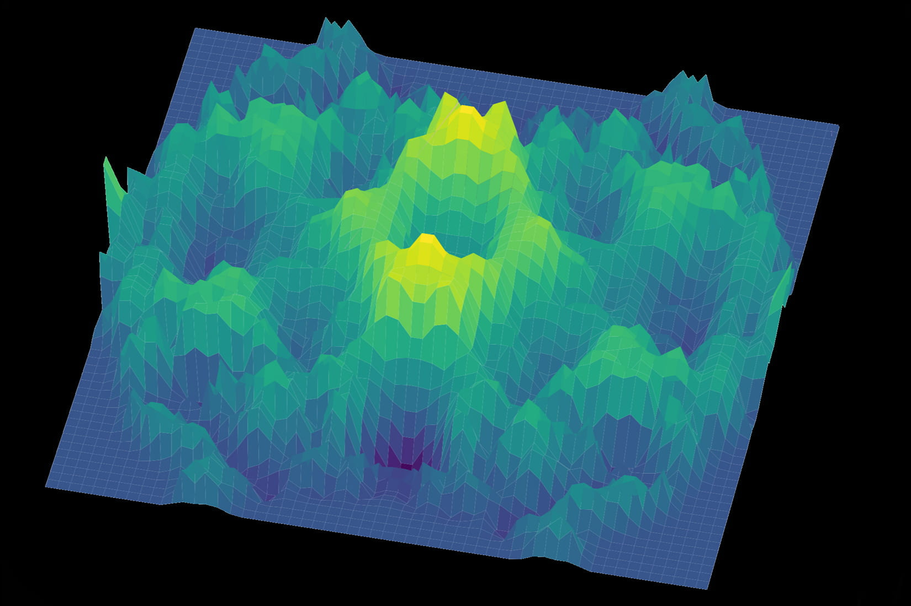
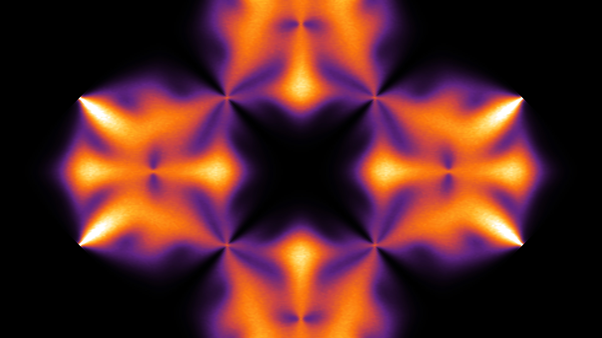
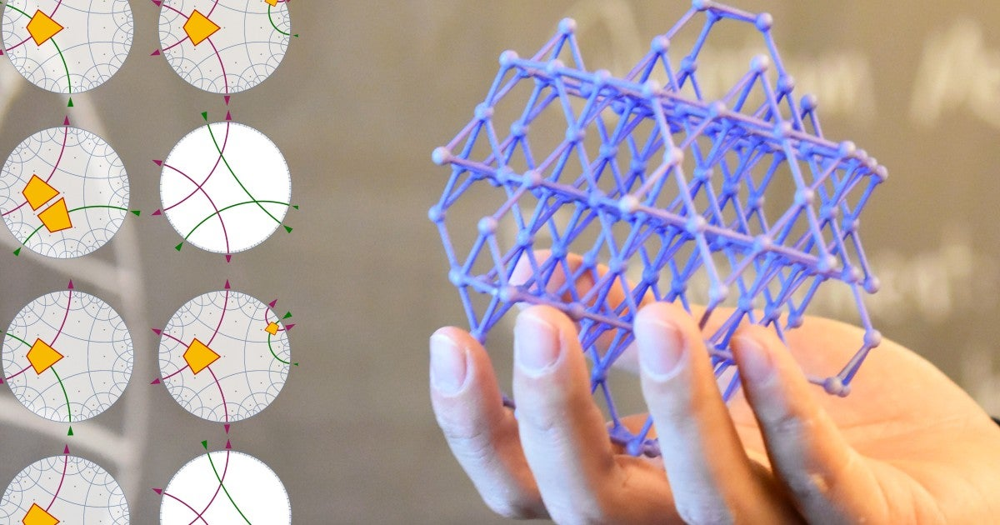
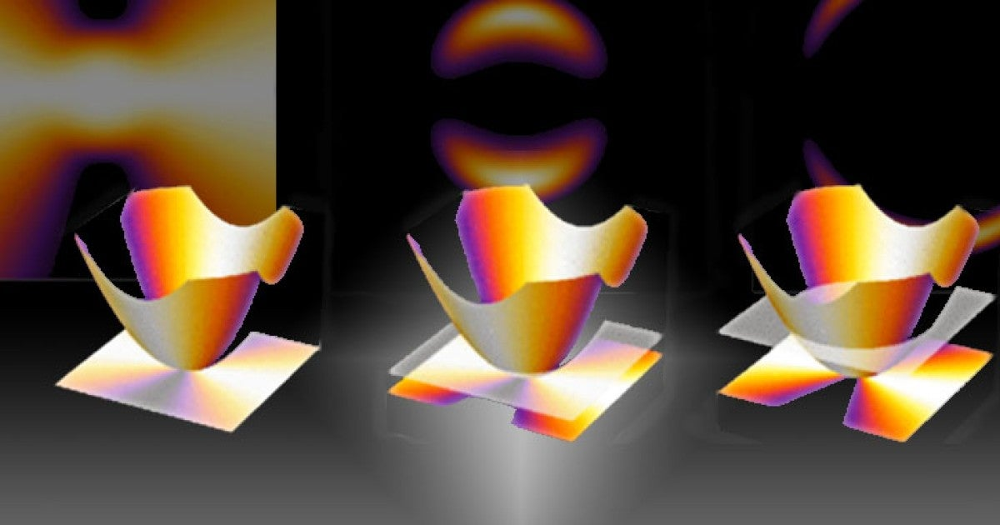
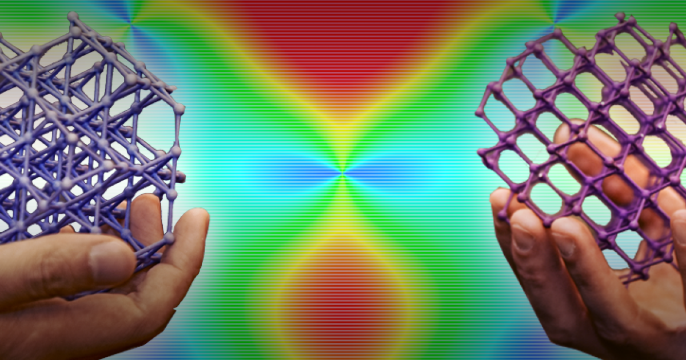
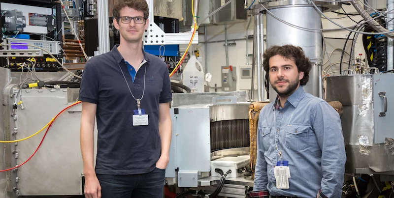
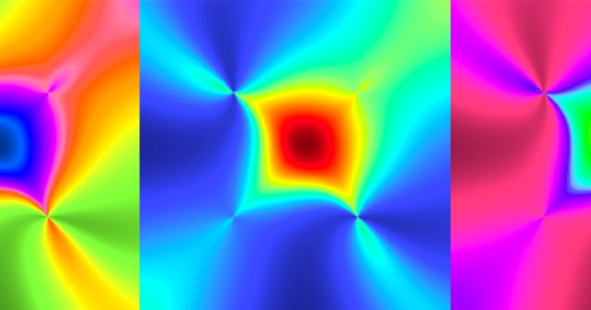
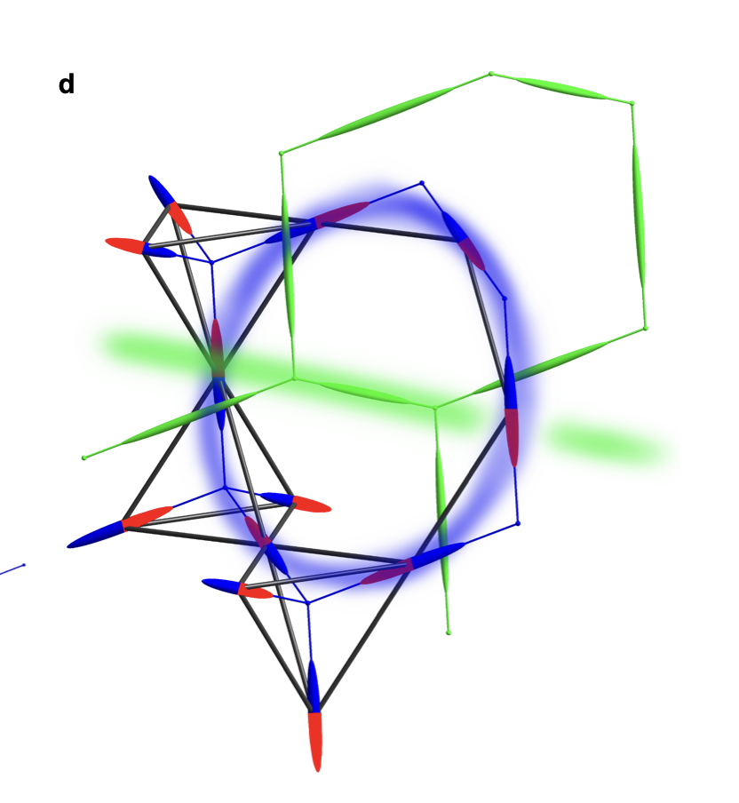

News stories and public-facing articles about my research, each linked to the original report and the related paper.
Human-AI ‘collaboration’ makes it simpler to solve quantum physics problems
OIST News; highlighted research: Phys. Rev. Research 7, 033061 (2025), arXiv:2402.10658.

A step towards emergent QED in d=3+1 with high-resolution neutron scattering
Journal Club for Condensed Matter Physics; highlighted research: Nature Physics 21, 83-88 (2025), arXiv:2304.05452.

Can quantum particles mimic gravitational waves?
OIST News; highlighted research: Phys. Rev. B 109, L220407 (2024), arXiv:2310.10078.

Computational sleuthing confirms first 3D quantum spin liquid
Rice University News; highlighted research: npj Quantum Materials 7, 51 (2022), arXiv:2108.01096.

Synopsis: A Recipe for Finding Fractons (Physics 13, s40)
APS Physics Magazine; highlighted research: Phys. Rev. Lett 124, 127203 (2020), arXiv:1902.10934.
The ‘Weirdest’ Matter, Made of Partial Particles, Defies Description
Quanta Magazine; highlighted research: Phys. Rev. Lett 124, 127203 (2020), arXiv:1902.10934.
Man versus machine: can AI do science?
OIST News; highlighted research: Phys. Rev. B 100, 174408 (2019), arXiv:1907.12322.

Theories Past and Present Show Quantum Connections
OIST News; highlighted research: Phys. Rev. B 99, 155126 (2019), arXiv:1807.05942.

Half Moons and Pinch Points: Same Physics, Different Energy
OIST News; highlighted research: Phys. Rev. B (Rapid Comm.) 98, 140402(R) (2018), arXiv:1806.08520.

Seeing the Light? Study Illuminates How Quantum Magnets Mimic Gravity
OIST News; highlighted research: Nature Physics 14, 711-715 (2018), arXiv:1706.03604.

Spin ice goes quantum
PSI Scientific Highlights; highlighted research: Nature Physics 14, 711-715 (2018), arXiv:1706.03604.

A New Spin on Reality
OIST News; highlighted research: Nature Communications 7, 11572 (2016), arXiv:1510.01007.

Neutron scattering signatures of a quantum spin ice
Swiss Neutron News cover article; highlighted research: Nature Physics 14, 711-715 (2018), arXiv:1706.03604.